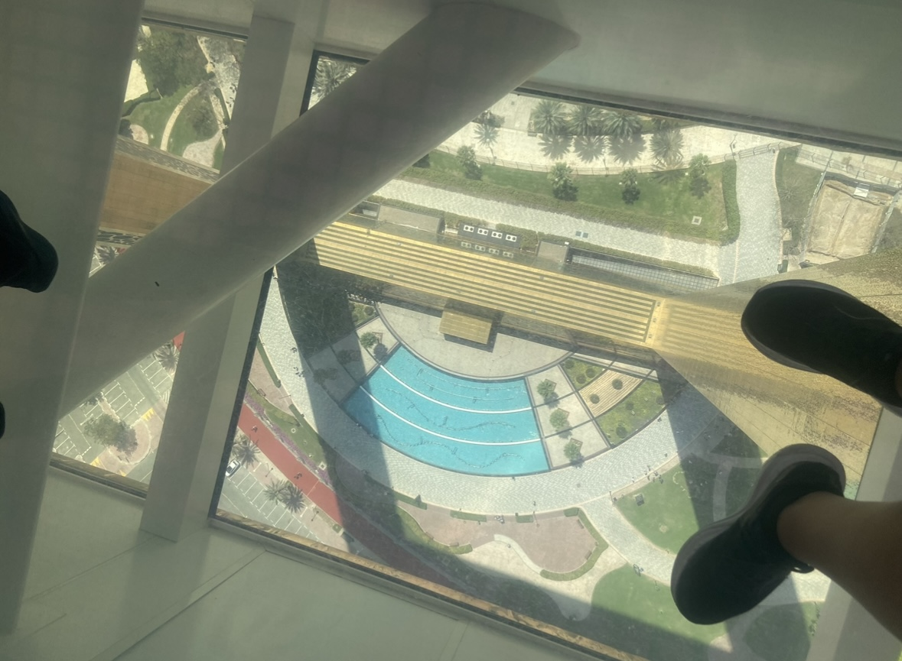
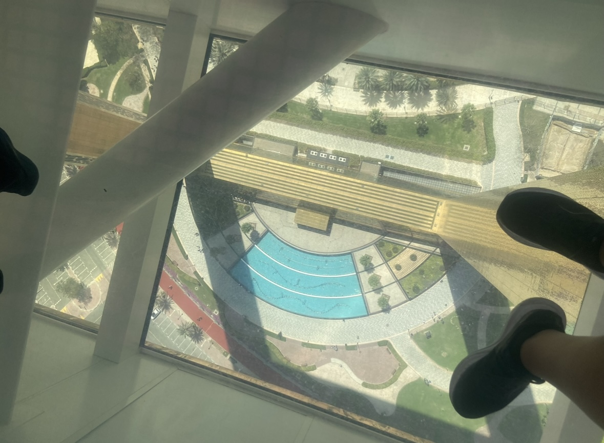
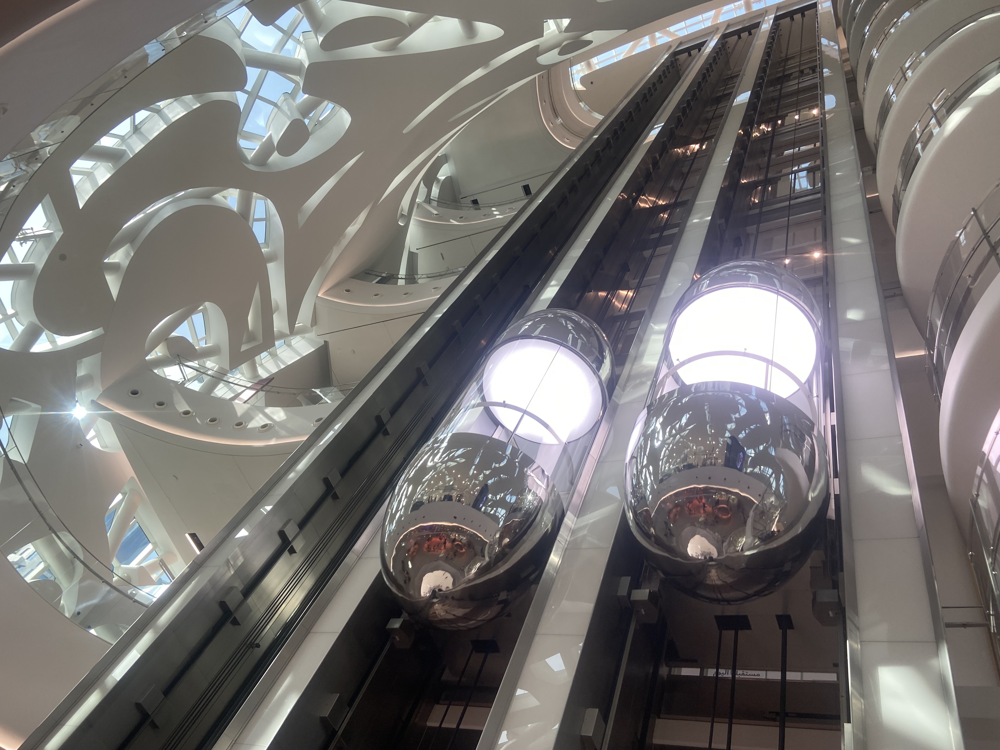
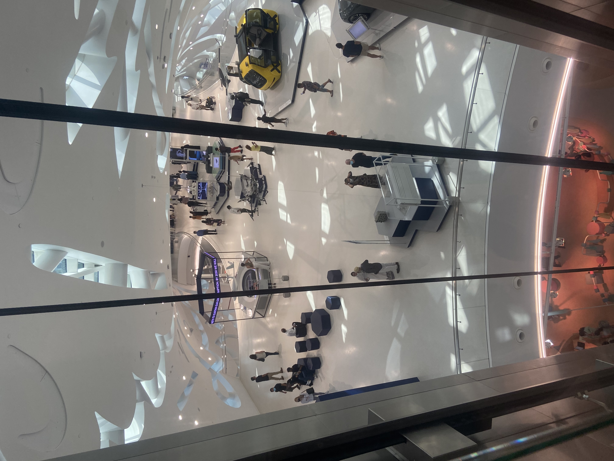
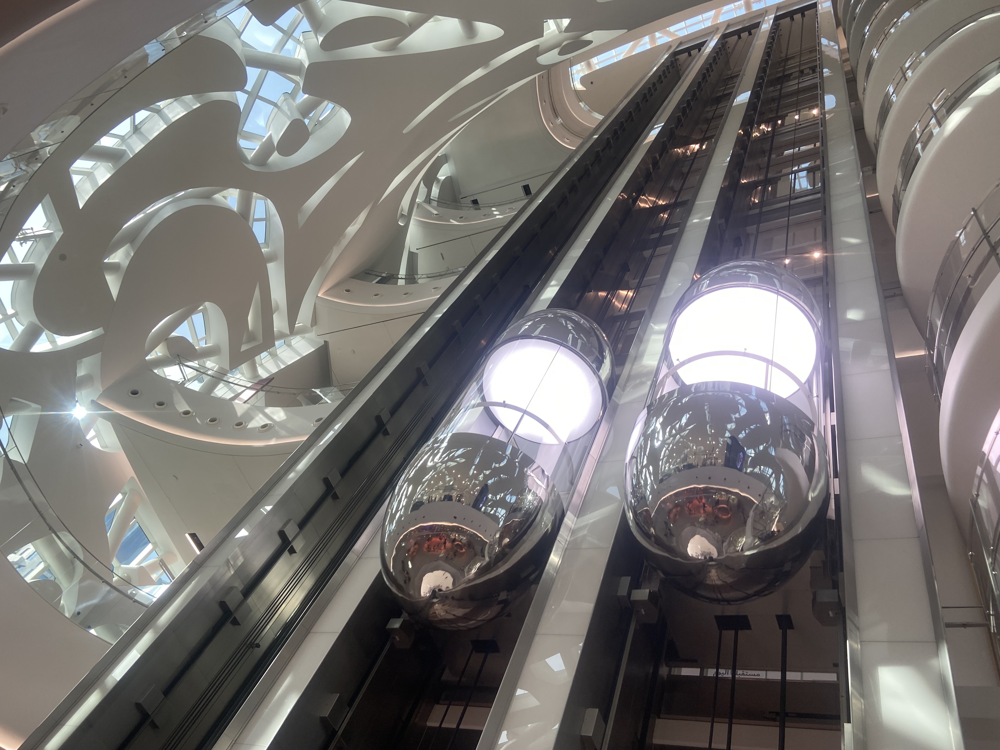
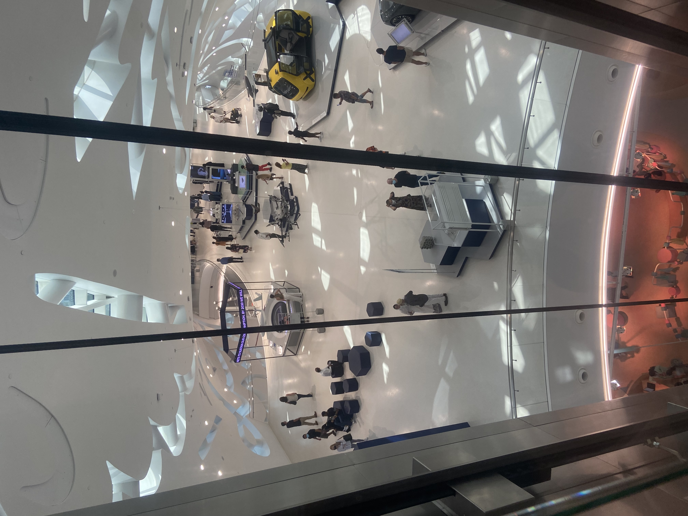

Hello everyone,
My name is Doron Cohen, and I wanted to share with you that I really like to travel and visit new places in the world.
This time I chose to share with you my trip to the United Arab Emirates, where I visited Dubai.
I highly recommend you to visit Dubai, and I would love for you to contact me after reading the article I wrote
About recommended attractions in Dubai.
If you have any further questions, please contact me in the following ways:
✉
First, we will explain a little about Dubai - the weather in Dubai during the month of February, the month of the trip we were in, was an average of 20 degrees during the day.
The recommended periods for a trip to Dubai are from November to February, since the rest of the year Dubai is characterized by hot and desert weather.
Citizens of Dubai are referred to as you said and it seems that most of them do not live in the country.
The country is characterized by a wide variety of immigrants who come to work there, mainly it can be seen that thousands of immigrants are immigrating from India.
The Indian immigrants work in all branches of the economy, starting with construction, hotels, car rentals and as service providers at the various tourist sites.
When traveling in Dubai, there is a feeling that it was created for tourism and recreation, since it has a multitude of diverse treks that it is hard to believe that it is real.
Dubai is flooded with tourists from all over the world in all seasons.
Recommendations for a trip to Dubai
The first day: On the first day we arrived at the Burg Khalifa complex, the complex includes a mall known as Dubai Mall, a huge tower known as Burg Khalifa, an artificial lake, an ancient covered market and hotels.The second day:
On the second day we arrived at the lookout known as the Palm Island observation deck.
We purchased the tickets and proceeded towards the entrance, while proceeding to the entrance we pass through a corridor surrounded by screens on the wall broadcasting the sea and fish, it is a breathtaking experience.
After that, we took the elevator to the top of the tower on the 50th floor and watched the gorgeous view towards the well-known palm island.
Before the descent we sat in a restaurant at the top of the tower overlooking the palm island and drank good coffee and went down after a few hours.
After that we went to the Palm Island, the Palm Island has a complex of restaurants, beaches and hotels.
After sitting on the beach and having dinner, we went to The Pointe, the restaurant and leisure complex, where the most beautiful fountains in the world are also located, since they are so impressive it was hard to say goodbye.


The third day:
On the third day we went to the flower garden, the flower garden is a garden of real flowers that are arranged in an artistic and spectacular way.
In fact, you can see models of airplanes, movie characters and animals made of flowers.
You don't see that every day and we spent a few hours there.
In the complex itself there are many restaurants and attractions.
The fourth day:
On the fourth day we went to the global park, the global park includes all the countries of the world.
Each country has established its own complex where things that characterize that country are sold.
And for example, in Turkey you can find a large market for clothes, in Oman spices, in China electrical products and gadgets and more.
In addition, the park has many food stalls from many countries and this is an attraction in itself.
The park is only open during the "winter" days in Dubai due to the heavy heat in the summer.
The fifth day:
Dubai Outlet: We went to the Dubai Outlet mall, where you can find top brands at significantly cheaper prices, although Dubai Mall is more impressive in its design and includes a wider variety of stores, but Dubai Outlet wins in terms of price.
The sixth day:
We went to the Borg El Ain complex, Borg El Ain is actually a hotel located on an artificial island in the middle of the sea.
In the Borg El Ain area there is a huge market where you can find antique collectibles as well as trendy and contemporary shops.
In addition, when you go out of the bazaar, you can see an artificial lake that allows you to take a boat.
On the seventh day:
We went to the Dubai frame, it is a huge gold-colored frame, we bought tickets and went up in the elevator to the top of the frame where you can see an impressive view of the city, and in addition part of the floor is transparent so you can see the bottom from a great height and this is an experience.
 
 

On the eighth day:
We discovered that in Dubai there is a museum known as the Museum of the Future, where there are actually technological representatives who deal with futuristic technologies, it was very gratifying to see the developments that are going to come out in the near future.
Such as a system that helps a person lift a heavy weight with minimal effort and special vehicles that can be driven without a driver.
  
 
Insights from the trip to Dubai:
We really enjoyed the trip, there are good people in Dubai, and a feeling that the tourist is in the center.